4 Data structure
In this chapter, we will discuss aspects of data structure, with a view to features that may be considered typical for most types of corpus research. Much corpus-based work deals with data points, or corpus hits, that are annotated or classified along several dimensions, yielding analysis settings that include, in addition to the outcome quantity to be studied, multiple features that may (be expected to) show an association with the response variable. In such multivariate settings, We will group those variables accompanying the outcome into two components (cf. Welham et al. 2014, 5):
- The systematic component (also called explanatory component) includes variables that are of primary linguistic interest, and which we expect to show a (pre-specified) relationship with the outcome. We will refer to such variables as predictor variables1.
- The structural component represents the way in which a data set is organized, beyond the systematic factors under study. This component identifies relevant units (e.g. lexical units or speakers), which add layers to the internal organization of a set of corpus hits. This structural feature is critical in corpus data analysis, and we will use the terms data layout and data structure to refer to this recurrent arrangement of corpus hits.
1 In the DoE literature, the terms factor or treatment are often used, along with independent variable or explanatory variable. We will make an effort to avoid such terms, since they imply a level of control that we do not exert in observational data settings.
This chapter starts with a closer look at the two components, and the structural relationships between them. This is followed by a section that draws terminological connections to other literatures. We will then illustrate how the knowledge about the structural and systematic component can be systematized into a plot plan of the data, an organized schematic overview that identifies the critical features of the data layout. In Chapter Chapter 6), we will see how this plot plan provides invaluable guidelines for regression modeling. The final section offers practical demonstration on how to use R to explore data layouts.
4.1 The structural component
The first step in corpus-based work is to think carefully about the (prospective) structure of the data. We use the term data structure to refer to the underlying organization of observations (i.e. corpus hits) that exists prior to coding and classifying the data accoring to the variables of primary interest (the predictors, which are part of the systematic component). More specifically, the structural component may include two ways in which the individual observations in our set of data are grouped, or clustered: (i) they may stem from the same speaker or writer, i.e. the same source, and/or (ii) they may be grouped on lexical grounds, i.e. several tokens represent, or involve, the same lexical unit. In such cases, we say that there is clustering in the data. If a set of corpus hits can be arranged by speaker, for instance, we will refer to Speaker as a clustering factor, and to individual speakers as clustering units, or simply units. Clustering by source is a pervasive feature of corpus data. Whether we are also dealing with clustering by lexical unit depends on the linguistic structure or phenomenon we are studying. Both layout features of corpus data become more transparent by considering various examples of each.
4.1.1 Clustered data structure: Examples
To illustrate typical structural features of natural language data, we first consider, as an illustrative example, the sociolinguistic variable (ING). Let us briefly consider this research context: Words ending in <ing> may be pronounced as /ɪŋ/ or /ɪn/. The latter variant instantiates what is referred to as g-dropping. The objective is to describe and understand under which circumstances speakers show g-dropping.
Let’s assume we have compiled a corpus consisting of unstructured interviews with 66 speakers, with interviews varying in length. We search this corpus for relevant tokens, i.e. words ending in <-ing>. In total, we obtain 6314 instances. Our search returns multiple hits per speaker. Figure 4.1 shows distribution of token counts per speaker. Most informants contribute between about 70 and 150 tokens. This illustrates clustering by source: The 6314 observations that make up our data set can be arranged by Speaker.
“The data have a two-level structure with tokens as units at level 1 and subjects as clusters at level 2.”
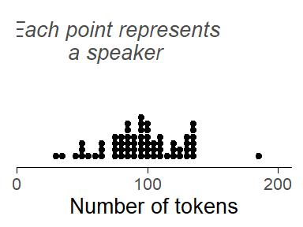
The tokens we have extracted from our corpus can also be broken down by lexical unit; we will use the shorter label Item. We consider identical forms with different word classes as different words. Thus, there are 795 unique forms, but some belong to different word classes - for instance, beginning and building (verb or noun), and demanding and entertaining (verb and adjective). WIth this definition of “word”, we arrive at 1024 units. For the data at hand, the 6314 tokens in our data set are distributed very unevenly across these 0 items. ?fig-ing-tokens-per-word) shows the distribution. Among the high-frequency forms that stand out are going (386 tokens), doing (226 tokens), being (NA tokens), and working (NA tokens). Of the 0 words, 544 (i.e. %) only occur once in the corpus. Such items are often referred to as hapaxes (short for hapax legomena). This illustrates clustering by lexical unit: The 6314 observations that make up our data set can be grouped by Item.
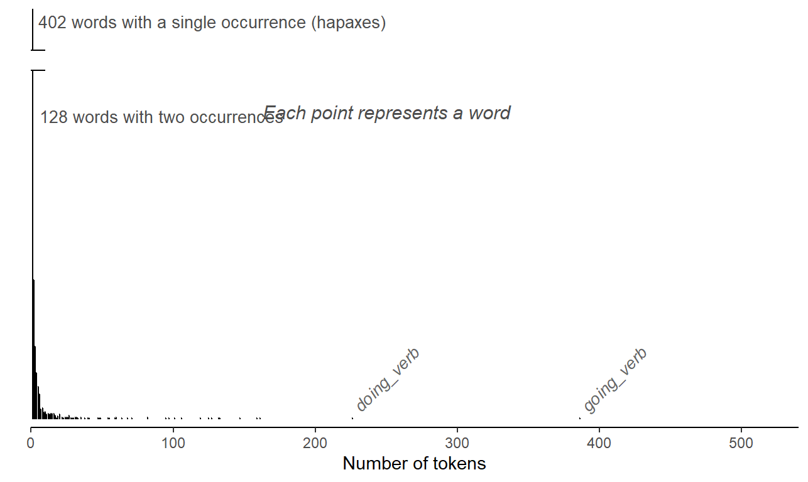
Clustering by source almost always materializes in corpus data. Thus, the hits we extract from a corpus can usually be grouped according to source: We may have multiple observations per speaker (spoken corpus) or text (written corpus). The second way in which observations may be organized is by lexical unit. Whether this type of clustering will surface in our data depends on the linguistic structure we are studying. If the construction/phenomenon of interest has variable slots and is therefore instantiated by different words, then observations will be clustered by lexical unit. Examples are listed in Table @ref(tab-clustering-word-examples).
4.1.2 Clustering produces higher-level units
Whenever we have clustered (or hierarchical) data structures, we can identify higher-level units in our data. At the lowest level in our data, we have the individual corpus hits, i.e. the instances that we have extracted from the collection of texts. We will refer an observations at this lowest level as a token, and sometimes, for variety, as a corpus hit, or observation.2 Each token therefore occupies a single line in the concordance table.
2 In the literature on the design and analysis of experiments, a critical distinction is that between the unit of measurement and the experimental unit. The distinction is made based on the design employed and on the type of randomization (actually) implemented when running the experiment. In the survey sampling literature, the notion of a sampling unit plays a central role, and a distinction is made between primary and secondary sampling units.
In other literatures, what we refer to as tokens may be called “level-1 units” or “observations at level 1”. We will try to will use the term token consistently and reserve the label “unit” for higher-level collections of data points, i.e. speakers/writers and lexical units. Since they sit at a higher level in our data layout, they are sometimes referred to as level-2 units, or simply groups or clusters. We will usually try to use concrete labels for these units, i.e. speakers (or texts) and words or types. And use the term unit when talking about higher-level entities more generally. The hierarchical organization of the tokens in our data set means that tokens can be arranged into clusters, with clusters differing in size. When describing such data layouts, we will say that there are higher-level units in our data, and that tokens are clustered (by Speaker, or by Item).
Due to the uncontrolled, observational nature of corpus data, it is typical for units to differ in size. This is true for both structural factors. The variability of token counts across speakers will depend mostly on corpus design – the number of tokens per speaker may vary, even considerably, depending on how much material a speaker or writer contributed to a corpus. We can sidestep highly uneven distributions by balancing the word count across speakers or texts at the stage of corpus compilation. Nevertheless, even if word counts are perfectly balanced, the number of relevant tokens for analysis will still show variation, since it also depends on how often a speaker/writer used the structure of interest. In general, then, we can only exert some control over the distribution of token counts over speakers. Usually, uneven tallies across speakers are a nuisance and of little substantive interest.
The distribution of token counts across words, on the other hand, will almost certainly vary markedly. There are likely to be a handful of high-frequency units (or types), accounting for the bulk of the data, and very many low-frequency words, some (perhaps a substantial proportion) of which appear only once in our data. Such skewed distributions are a typical footprint of natural language data – the frequency profile then resembles a Zipfian distribution. The extent of the skew (or imbalance) depends on the structure we are studying. It is, however, a near-universal feature of natural language use. Importantly, we have no way of exerting control over the distribution of token counts over words. That is, there are no corpus compilation strategies that will even out lexical occurrence rates. In contrast to unbalances tallies across speakers, however, the observed frequency distribution often bears linguistic meaning and is of substantive interest. The skewed profile we see in Figure 4.2) is a typical feature of natural language data.
For the (ING) data, the two types of clustering produce vastly different distributions of token counts. This is not untypical for natural language data. Between-speaker imbalances in token counts largely depend on corpus design. Asymmetries in token counts across words, on the other hand, reflect the natural workings of language. Before we go further, a brief comment on terminology: While it would make sense, in principle, to say that tokens are “nested” within Speaker (or Item), the notion of “nesting” is usually used to describe a relation between factors, not between observations and factors.3
3 There are exceptions in the literature, however, e.g. Rabe-Hesketh and Skrondal (2021), p. 75.
4.1.3 Clustered data structure: Crossed clustering
For a set of corpus data that show both types of clustering, by source and by lexical unit, the hierarchical grouping of tokens is in fact a kind of cross-classification. In our illustrative (ING) study, we have two clustering factors: Speaker and Item. We could create a table with columns for speakers and rows for words; then, each token would fall into a particular cell, i.e. reflect a certain speaker-word combination. Figure 4.3) gives a visual representation of the cross-classified hierarchical arrangement of tokens. Due to space limitations, words occurring fewer then 5 times are not included in the diagram. The distributions at the margins, represented by spikes, correspond to those shown in Figure 4.1) and Figure 4.2) above. The size of the circles in the grid is proportional to the number of tokens in the cell.
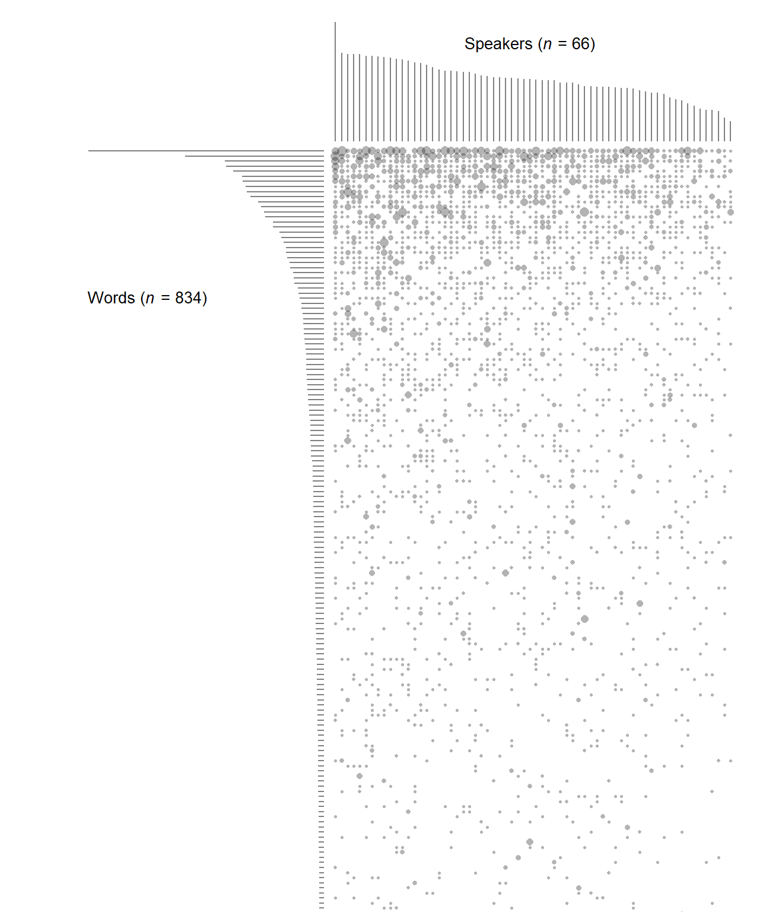
In principle, any speaker-word combination could occur. However, there are very many empty cells, especially for infrequent lexical items. This is a logical consequence of the skewed marginal distribution of word token counts: The majority of words have fewer tokens than there are speakers in the data set, and by necessity each hapax stems from a single speaker, leaving 65 empty cells in the table.
In the current data layout, Speaker and Item are crossed, which leads to the two-way arrangement shown in Figure 4.3). More specifically, as is evident from the patchy distribution of tokens across cells, they are partially crossed, which means that some combinations, though possible, are not observed. This is a common distributional feature of natural language data. It is in stark contrast to the kind of data structures produced by designed experiments, which are the size of units is usually (roughly) balanced.
The structural component of the model not only reflects the internal organization of observations, but also identifies different levels at which processes influencing the response may occur, or more cautiously, different levels at which we may observe systematic variation. This brings us to the next component.
4.2 The systematic component
We refer to variables that are the primary focus of a study as predictor variables; they constitute the systematic component of a data set. In the case of (ING), the probability of g-dropping has been observed to vary with a set of factors. These can be grouped into two classes: language-internal and language-external (or social). Social variables include attributes of the speaker – in our illustration of the (ING) data, these are Date of Birth, Sex, and Education. Internal features, on the other hand, are linguistic in nature. They may be attributes of the immediate environment in which a token was observed, e.g. Following Context – more specifically, the place of articulation of the following segment (coronal: saying [t]o her; velar: saying [g]ood-bye). They could also be properties of the lexical unit “carrying” the ending -ing – e.g. its Word Class, Frequency, or the consonant preceding -ing (coronal: waiting, velar: working).
4.2.1 Different units of analysis
Predictor variables in the systematic component must be considered in light of the structural component – that is, they must be linked to the level at which they are meaured or observed. Thus, predictors can be measured at the level of the individual token, or at the level of a higher-level unit (a particular speaker or word):
- The predictors Date of Birth, Sex, and Education are attributes of the speaker, so they are measured at the level of the speaker. We call them speaker-level variables.
- Predictors that represent attributes of words are Word Class, Frequency, and the Preceding Consonant – they are item-level variables.
- Finally, the Following Context is a property of the context in which a specific token appears and is measured by inspecting the individual corpus hit. It is a token-level variable.
It is important to be clear about the mapping between the systematic and the structural component. Each predictor must be linked to the appropriate level, and to the appropriate unit in the structural component. This leads to the distinction between token-level predictors (level-1 predictors) on the one hand, and speaker-level and word-level predictors (level-2 predictors) on the other.
This distinction has consequences for the analysis of the data. Thus, the unit of analysis for Age and Sex is the speaker.4 This means that the sample size for inferences about these social variables is the number of speakers in our corpus. Figure 4.4) shows the relevant units of analysis, the speakers, broken down by Date of Birth and Sex. Figure 4.5) stratifies speakers by Date of Birth and Education.
4 The term unit of analysis corresponds to the experimental unit in the literature on the design and analysis of experiments. For corpus data, the identification of the appropriate unit of analysis is usually fairly straightforward, since it follows logically from what a variable expresses and how it is measured. In data from experiments, the identification of relevant units can be much more difficult, since it depends both on the design and the method of random assignment used when conducting the experiment.
5 In some disciplines, this is referred to as pseudo-replication (Hurlbert).
From the point of view of these speaker-level predictors, the multiple tokens produced by a certain speaker do not add much information to our statistical conclusions. The relevant sample size is the number of different speakers. For each speaker, we have multiple tokens, however. This constitutes a form of sub-sampling. The notion of sub-sampling is relevant when considering level-2 predictors, which are measured on the speaker or word. We talk about sub-sampling when the data include multiple observations from the same unit. In the context of corpus data, then, sub-sampling may apply to speaker-level and word-level predictors and must be taken into account during the analysis of the data.5 This is because, say, additional tokens per speaker are of marginal relevance for the analysis of differences between age groups – they merely contribute to the state of information we have about one individual.
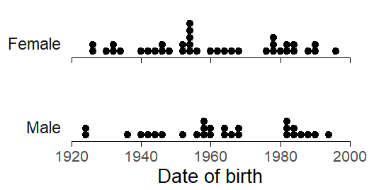
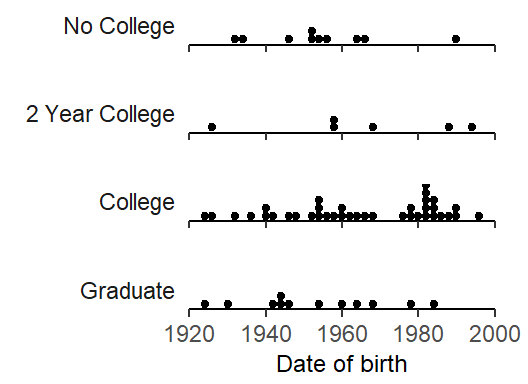
The unit of analysis for Word Class and Frequency, on the other hand, is the word. Again, the relevant sample size for these word-level predictors is the number of unique words in our data set. Figure 4.6) shows how the 0 unique words are distributed across word classes and the frequency spectrum. Note that Frequency is shown on a log-scaled x-axis.
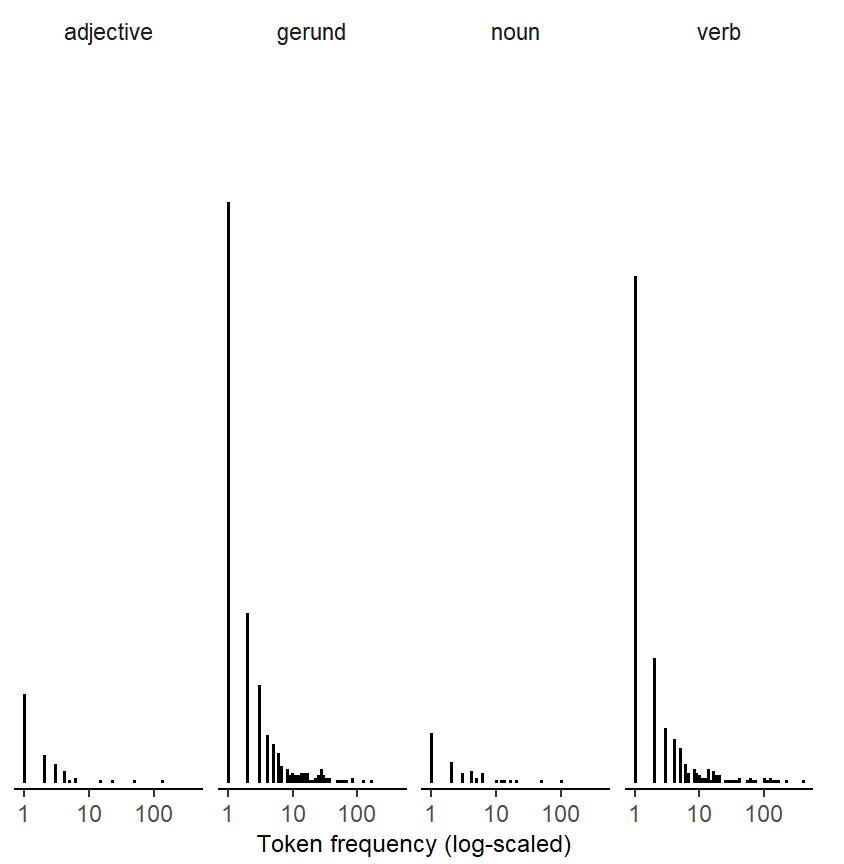
Finally, the level of analysis for the Following Context is the specific corpus hit. This is because the predictor is measured by looking at the immediate phonetic context in which the token appears. It is therefore an attribute of the smallest level of observation: the token, or corpus hit.
4.2.2 Speakers/words: Nested factors
The two clustering factors in the (ING) data set are Speaker and Item. The relationship that holds between these factors and the corresponding level-2 predictors is referred to as one of nesting. Consider the factor Speaker. Each level of the factor (i.e. each speaker in our data) belongs to one particular level of a speaker-level predictor, for instance a particular age group. A speaker cannot be observed at different values or levels of a speaker-level predictor. Likewise, each word belongs to a certain lexical category, a word-level predictor. It cannot be observed in different categories. Whenever we have a nesting relationship between two factors, we can say that one factor (e.g. Speaker) is nested within the other (e.g. Date of Birth). The factor Item, then, is nested within Word Class. More generally, a nested relation means that each level of the nested factor (i.e. Speaker and Item) can only be observed in combination with one particular level of the outer factor, the level-2 factor.
In general, there are two important structural relations that can hold between factors; nesting is one of these. The other is referred to as crossing. When two factors are crossed any combination of the levels is possible. We have already come across a crossing relationship: that between Speaker and Item (see Figure 4.3). We will return to crossing shortly.
In corpus data, nesting relations between clustering factors and cluster-level (level-2) predictors are not difficult to discern. This is because they arise naturally – we can identify them on the basis of our background knowledge. Thus, it is quite obvious that a speaker can belong to only one value of a speaker-level predictor. In our data set, for instance, a given speaker has a certain sex and date of birth.6 Likewise, a given word belong to a particular lexical category. More generally, then, we can state the following:
6 We will disregard the fact that certain speaker-level variables can also change over time – examples are the number of foreign languages spoken, the place of residence, or gender. At the time of data collection, speaker-level factors assume a particular value, which remains constant across the observations collected from this individual.
- The levels of the factor Speaker (i.e. the individual speakers in the data sets) are nested within the levels (or values) of speaker-level predictors.
- The levels of the factor Item (i.e. the individual words in the data sets) are nested within the levels (or values) of word-level predictors.
We can depict nested relationships between factors visually. Thus, Figure 4.7) shows two-way classifications of tokens in the data: (i) by Speaker and Sex (top); and (ii) by Speaker and Age Group (bottom). Speakers are ordered by Sex, Age Group, and the number of tokens they produced; the size of the circles is proportional to this token count (see Figure 4.1)). Figure 4.7) illustrates what nested relationships between factors look like: Cross-tables between factors that enter into a nesting relationship have a systematic arrangement of empty cells, since the observable combinations of levels are limited.
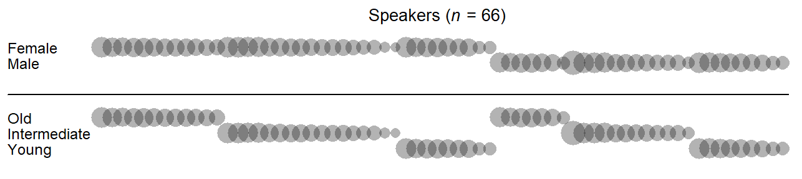
In corpus data, nesting relationships are intrinsic attributes of the data. Once we have established a mapping between the systematic and the structural component, the identification of nesting relationships is fairly straightforward. In the statistical literature, Speaker and Item are referred to as nested factors7. The factors within which Speaker and Item are nested are referred to as nesting factors8.
7 Other labels are inner factor and hierarchical factor.
8 Other labels are outer factor, cluster-level factor, cluster-constant factor. In longitudinal data: time-invariant variable
4.2.3 Token-level predictors: Crossed with Speaker/Word
- environmental factor
- phonetic nature of the following segment
- preceding and following phonological segment
- on the immediate left, on the immediate right
Token-level predictors such as the Following Context always enter into a crossing relationship with clustering factors – in our case, with both Speaker and Item. This is because all values of the token-level predictor (i.e. coronal, velar, pause, other) may occur with each speaker and each word: Speakers may produce tokens in each phonetic context, and words may likewise appear in each phonetic context.
Let us visualize these cross-classifications of tokens. Figure 4.8 illustrates the crossed relationship between Speaker and Following Context. The 66 speakers in our data are arranged from left to right, and the levels of the factor Following Context are ordered by rate of occurrence, from top to bottom. Looking at the occurrence rate of the observed places of articulation, the general cline (other > coronal > pause > velar) appears to be fairly consistent across speakers. Figure 4.8 also lists the tokens counts observed in each cell. Even though there are many sparsely populated cells, every possible combination of the two classification variables, Speaker and Following Context, occurs in the current data set. The two factors are therefore said to be fully crossed.
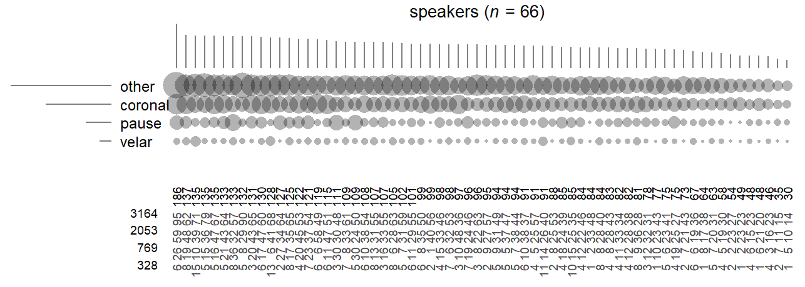
Next, consider the crossed relationship between Item and Following Context. We will restrict our attention to words that occur at least 20 times in our data set (n = 57). A visual impression of the two-way counts is provided in Figure 4.9. Note that the general frequency cline (other > coronal > pause > velar) does not hold across lexical items – the observed frequencies across the grid show pronounced peaks and gaps. The top-ranking going (v), for instance, is most likely to be observed before coronal sounds, contrary to the general trend in the tallies; trying (v), on the other hand, ranking 7th, is exclusively followed by coronal sounds.
In statistical terms, there is an association between Item and Following Context. What this means is that there is a tendency for words to occur in different phonetic contexts. Such distributional asymmetries are unsurprising, and – in the present case – to a certain extent predictable: They could reflect collocational or collostructional preferences (e.g. going to and trying to, each with a high string frequency), or, in our case, variation among word classes in terms of the likelihood of preceding certain high-frequency function words (e.g. the and a would be more likely after verbs; of would be expected to occur more often after nouns).
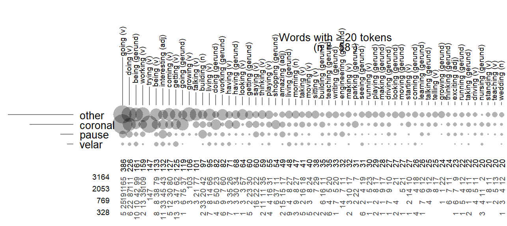
When breaking down the corpus hits by Item and Following Context, we end up with quite a few empty cells — not every possible combination of the two classification variables occurs in the current data set. The two factors are therefore said to be partially crossed.
In general, then, the crossing relationship between clustering factors and token-level predictor will be one of full crossing or partial crossing. For the two-way distribution of tokens, we can state that, for the factor Speaker, we would usually expect no systematic differences in the occurrence rate of token-level predictor values (see Figure 4.3). For the factor Item, on the other hand, the rates at which token-predictor values occur may vary between lexical units. This variation reflects language-internal distributional patterns, and will usually make sense linguistically.
4.2.4 Level-2 predictors in cross-classified clustering: Crossing relationships
In cases where the structural component of a data set shows a cross-classified layout, a level-2 predictor measured on one clustering factor (e.g. Speaker) is crossed with the other clustering factor (e.g. Item). For instance, a word-level predictor such as Word Class is crossed with Speaker. This is because every level of the predictor Word Class may be observed in each speaker. The two-way frequency distribution is is visualized in Figure 4.10), at the top. Speaker and Word Class are partially crossed – the low-frequency word classes noun and adjective are not observed in every speaker. Figure 4.10) also offers a visual cross-classification of Figure 4.10) with Preceding Consonant and Frequency (binned into three frequency bands with breaks at 10 and 100). For both word-level predictors, we observe full crossing with Speaker.
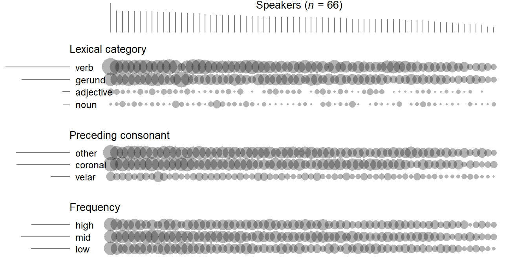
The same structural relationship holds the other way around, namely between speaker-level predictors such as Date of Birth and the clustering factor Item.
4.3 Data structure: Descriptive statistics
4.3.1 Structural component
The total number of observation is … The number of clusters is and there are an average of … tokens per cluster in the dataset.
Need to plot
4.3.2 Systematic component
In clustered data settings, we can distinguish between two different kinds of averages: The overall mean for a variable disregards any clustering structure and simply averages over the entire set of tokens in the data. The computation of the grand mean, on the other hand, involves an intermediate step: First, cluster-specific averages are computed, and then we average over these cluster-specific averages.
- overall standard deviation: SD of all observations from the overall mean
- between standard deviation: SD of the cluster means from the overall mean
- within standard deviation: SD of the observations from the cluster means
Here, it probably doesn’t make sense to compute the between-cluster variability for words in this way, because of the many hapaxes. Probably better to use a multilevel model here. We could do something similar for the other linguistics predictors in the data.
| Variable | Level | Mean | SD_word | SD_subject | |
|---|---|---|---|---|---|
| 1 | Following context | Overall | 0.17 | 0.38 | 0.38 |
| 3 | Between (MLM) | NA | 0.12 | 0.05 | |
| 5 | Within (MLM) | NA | 0.23 | 0.24 |
We see that Following context varies much more within speakers than between speakers.
We can express the distribution of level-2 variables at two different levels: Either across tokens, or across the respective units (or clusters).
Thus, we could compute the proportion of tokens that are verbs. And we can compute the proportion of words that are verbs.
4.4 Data structure: Terminology across literatures
Hierarchical data structures occur in almost any domain of statistics. As a result, the terminology that has evolved to describe relevant aspects of a set of data varies considerably. We will make an effort here to draw parallels between different strands.
The terms crossing and nesting are applied independently of the substantive research area.
DoE: Whole plots, subplots; whole units, subunits
econometrics: panels
4.5 Drawing a plot plan for natural language data
To coordinate and communicate information about corpus data structure, it helps to sketch the data layout. This section introduces a template that may be used to document the important structural features of a data set. Here, we will explain how to fill in this template. In Chapter @ref(model-specification} we will see how this organized arrangement will allow us to specify regression models in an informed manner.
Stroup (2013) notes that every set of data can be considered as having a plot plan. This term originates from agricultural experimentation, where treatments (e.g. different fertilizers) are often applied to plots of land.9 We will adopt this term to describe the data layout, which we often sketch visually.
9 Within the design of experiments literature, the field of agriculture has been an important source of technical terms. This is due to the fact that R.A. Fisher, who invented many of the designs and techniques still in use today, did applied work in this field.
As we will see in the next chapter, this plot plan will be of help when making decisions about how to analyze a set of data. A plot plan brings together the structural and the systematic component of a set of data and identifies the relationships that hold between the factors in our data – i.e. that of nesting and (partial) crossing. These data features have consequences for the specification of regression models.
4.5.1 Step 1: Map the structural component
The first step is to identify clustering variables in our data. As we have discussed above, these can generally be of two kinds. Language-external clustering by source is almost always discernible in a set of corpus hits – they may be from the same Speaker (spoken corpus) or Text (written corpus). To get a feel for the data structure, we should count the number of unique speakers/texts that contribute tokens to our data, and then the number of tokens from each speaker/text (cf. Figure 4.2)).
Depending on the type of structure under investigation, there may, in addition, be clustering by lexical unit, where tokens extracted from a corpus represent the same Item. Again, it makes sense to determine the number of unique lexemes that feature in our data, and to inspect a token frequency profile (see Figure 4.2)). This will reveal to which extent token counts are skewed, and it is worthwhile to identify the top-ranking items.
If we observe both kinds of grouping structures, the clustering factors will be crossed. Cross-tabulations and diagrams may help us perceive features of this two-way distributions of tokens.
In general, two common structural layouts seem to be the following:
- Clustering by source only
- Crossed clustering by source and on lexical grounds
These two situations lead to two different templates for our plot plan.
4.5.2 Step 2: Determine the unit of analysis for each predictor
Next, we turn to the systematic component. Take the list of predictors and determine, for each one, the appropriate unit of analysis. Two related questions help us arrive at an appropriate classification. Predictors represent attributes of units. The first question is what kind of unit a predictor classifies or measures: Is it an attribute of the speaker (or text), an attribute of a lexeme, or an attribute of the immediate context of the corpus hit. The second question is how the attribute is determined. Is it measured based on information about the speaker or text, based on the lexeme at hand, or is it determined by looking at the specific context in which the token occurs. Usually, there are three possibilities. The unit of analysis can be (i) the speaker, (i) the word, or (iii) the context.
4.5.3 Step 3: Sort the predictors into token-level and cluster-level variables
Having identified the appropriate unit of analysis for each predictor, we can distinguish between token-level predictors (attributes of the context of occurrence), speaker-level predictors (attributes of the speaker), and word-level predictors (attributes of the word). We enter these variables into the plot plan at the appropriate places: Token-level predictors are listed inside of the box, speaker-level predictors are given above the box, and word-level predictors are appear to the left of the box.
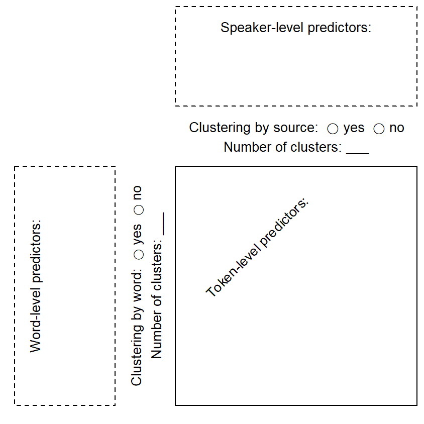
4.6 Tools
To obtain preliminary insights into the structure of the data, the following tools are helpful:
- dot diagrams
- bubble charts
- line plots
4.6.1 Graphing the data structure using R
Once the plot plan is set up, we tabulate and visualize the distributional features of our data. Two chart types are particularly useful to this end: dot diagrams and bubble charts.
4.6.2 The structural component
An important first step is to get an insight into the distribution of tokens across clusters. The cluster variable needs to be available as a column in the data set. We start by producing a table of token counts by speaker and sort this table:
ing_sample |>
group_by(speaker) |>
summarize(token_count = n()) |>
arrange(-token_count)This will return the following table:
# A tibble: 66 × 2
speaker token_count
<fct> <int>
1 142 186
2 376 137
3 116 135
4 368 135
5 379 135
6 174 133
7 328 133
8 383 132
9 370 131
10 369 130
# ℹ 56 more rowsWe can use the data in this table to draw a dot diagram:
ing_sample |>
group_by(speaker) |>
summarize(token_count = n()) |>
arrange(-token_count) |>
ggplot(aes(x=token_count)) +
geom_dotplot()Bin width defaults to 1/30 of the range of the data. Pick better value with
`binwidth`.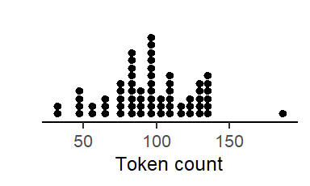
Dot diagrams are a useful tool. The figure we just produced already gives us important insight into the structure of the data. Token counts can vary widely across speakers. This is a typical feature of natural language data.10
10 Certain structures are more prone to produce unequal token counts across speakers. We can get an idea of how prone a structure is by inspecting the variation in rates across text samples of equal size. It would be helpful to have some sort of typology of language structures at some point.
11 Again, a typology would be useful to have, based on linguistic criteria.
The second step is to do the same for the different lexical items in your data. Determine the overall number of unique lexemes, and then the number of tokens for each lexeme. This gives you a second important perspective on the structure of your data. Again, you produce a dot diagram. Depending on the type of structure you are investigating, the distribution of token counts across lexemes could be highly uneven. It could show a Zipfian distribution.11
ing_sample |>
group_by(word_2) |>
summarize(token_count = n()) |>
arrange(-token_count)This will return the following table:
# A tibble: 1,024 × 2
word_2 token_count
<fct> <int>
1 going_verb 386
2 doing_verb 226
3 being_gerund 161
4 working_verb 159
5 trying_verb 147
6 being_verb 133
7 interesting_adjective 132
8 coming_verb 127
9 getting_verb 125
10 going_gerund 119
# ℹ 1,014 more rows4.6.3 Cluster-level predictors
Next, consider the speaker-level and word-level predictors in turn. Produce cross-classifications for all speaker-related variables and observe how speakers are distributed across the categories. You may need to discretize continuous variables. Look for problematic distributions. Then do the same for word-level predictors.
4.6.4 Token-level predictors
The distribution of token-level predictors should be inspected at different levels. The overall distribution disregards clustering factors and reports the distribution of the variable throughout the entire data set. Two further dimensions that are of interest take into account the data structure. Thus, we can partition the overall distribution into two components, one between clusters and one within clusters. The important insight here is the extent of the between-cluster variation, since it signals the extent to which clusters vary in their constellation with regard to this token-level variable. As we will see later on, it is important to be aware of differences among clusters if they exist.
For natural language data, we need to be careful when separating these sources of variability since clusters may differ dramatically in size. The best way seems to be to run a multilevel regression model with the token-level predictor as the outcome, and the clustering factors as random intercepts. This allows us to separate these two variance components, i.e. the within- and the between-dimension. For categorical token-level variables, we need to invoke the latent-variable interpretation of binary regression models.
4.7 Natural language use
Language-internal factors vary naturally